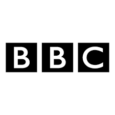
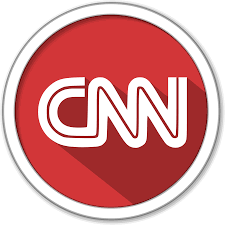
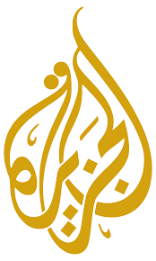
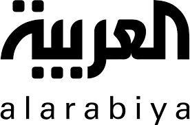
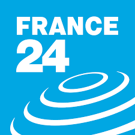

ما هي الأخبار الكاذبة؟
الأخبار الكاذبة هي الأخبار التي تحتوي على معلومات غير دقيقة أو مفبركة، تهدف إلى تضليل الجمهور أو التأثير في الرأي العام. قد تكون هذه الأخبار تهدف إلى نشر الفتنة أو تحقيق مكاسب اقتصادية أو سياسية.
التاريخ الخفي للأخبار الكاذبة
على الرغم من أن مصطلح "الأخبار الكاذبة" أصبح شائعًا في السنوات الأخيرة، إلا أن جذوره تمتد إلى قرون مضت. في القرن الخامس عشر، استخدمت الكنيسة الكاثوليكية منشورات مزيفة لتشويه سمعة مارتن لوثر. وخلال الحرب العالمية الأولى، نشرت جميع الأطراف أخبارًا كاذبة لتعزيز الروح المعنوية لقواتها وإضعاف العدو.
دراسة حالة: الحرب العالمية الأولى
في عام 1917، نشرت الصحف البريطانية تقارير كاذبة عن جنود ألمان يقومون بغلي جثث الجنود لاستخراج الجلسرين. هذه القصة المفبركة ساعدت في تجنيد المزيد من الجنود البريطانيين.
أنواع الأخبار الكاذبة
- الأخبار المفبركة: لا أساس لها من الصحة تمامًا. مثال: "العلماء يكتشفون أن الأرض مسطحة"
- التلاعب بالصور والفيديوهات: لتشويه الحقيقة. مثال: استخدام برامج التعديل لخلق مشاهد لم تحدث.
- الأخبار المضللة: تحتوي على جزء من الحقيقة يُستخدم بشكل خاطئ. مثال: اقتباس خارج السياق.
- الشائعات: أخبار تنتشر بسرعة دون مصدر موثوق. مثال: "مشاهير ماتوا بينما هم أحياء".
- المحتوى المسيء: استخدام حقائق دقيقة ولكن بطريقة تحريضية.
- المحتوى المزيف: مواقع إخبارية وهمية تنتحل صفة وسائل إعلام حقيقية.
أسباب انتشار الأخبار الكاذبة
86%
من مستخدمي الإنترنت وقعوا في فخ الأخبار الكاذبة
6x
تنتشر الأخبار الكاذبة أسرع من الحقيقية
65%
من حالات التضليل تكون لأغراض سياسية
- الرغبة في التأثير السياسي: تستخدمها الحكومات والأحزاب لتشويه الخصوم.
- زيادة التفاعل على وسائل التواصل: الأخبار المثيرة تحقق مشاهدات أكثر.
- الجهل أو قلة المعلومات: بعض الناشرين لا يتحققون من الحقائق.
- الدوافع الاقتصادية: بعض المواقع تروج للأخبار الكاذبة لزيادة الإعلانات.
- التحيز المعرفي: الناس تميل لتصديق ما يتوافق مع معتقداتها.
- سهولة النشر: أي شخص يمكنه نشر أي شيء دون رقابة.
تأثير الأخبار الكاذبة على المجتمع
"الأخبار الكاذبة هي أكبر تهديد للديمقراطية في عصرنا" - مارك زوكربيرج
- إحداث الارتباك والتضليل: تجعل من الصعب التمييز بين الحقيقة والكذب.
- زعزعة الثقة في وسائل الإعلام: الناس تصبح أكثر تشككًا في جميع الأخبار.
- التحريض على العنف والكراهية: أخبار كاذبة تسببت في أعمال شغب وقتل.
- تأثير اقتصادي: أخبار كاذبة عن شركات تؤثر على أسعار الأسهم.
- تأثير على الصحة العامة: معلومات خاطئة عن اللقاحات تسبب انتشار الأمراض.
- تقسيم المجتمع: تعميق الخلافات بين الجماعات المختلفة.
دراسة حالة: لقاحات كورونا
في 2020، انتشرت إشاعة أن لقاحات كورونا تحتوي على شريحة تتبع. هذه الإشاعة أدت إلى تردد الكثيرين في أخذ اللقاح، مما ساهم في استمرار الوباء.
أمثلة صادمة من الواقع
- أخبار مغلوطة عن لقاح كورونا: ادعاءات أن اللقاح يغير الحمض النووي.
- أخبار كاذبة خلال الانتخابات: مثل الانتخابات الأمريكية 2016.
- فيديوهات مزيفة لأحداث حقيقية: مثل فيديوهات "ديب فيك" للسياسيين.
- إشاعات عن مشاهير: مثل أخبار وفاة ممثلين وهمية.
- أخبار كوارث لم تحدث: مثل إعصار مزيف سيضرب منطقة ما.
- نظريات المؤامرة: مثل الأرض المسطحة أو هبوط مزيف على القمر.
كيفية التحقق من الأخبار: دليل عملي
قائمة التحقق من الأخبار
- تحقق من المصدر: هل الموقع معروف وموثوق؟
- ابحث عن الخبر في وسائل إعلام أخرى
- تحقق من تاريخ النشر: قديم أم حديث؟
- افحص الصور باستخدام البحث العكسي
- اقرأ التعليقات: قد يشير الآخرون للتضليل
- استخدم مواقع التحقق مثل Snopes أو FactCheck
- اسأل خبراء في المجال
- تحقق من السياق: هل الاقتباسات كاملة؟
أدوات مفيدة للتحقق
- Google Reverse Image Search: للتحقق من الصور
- InVID: لتحليل الفيديوهات
- TinEye: محرك بحث عكسي للصور
- FactCheck.org: للتحقق من الحقائق
- Snopes: للتحقق من الشائعات
كيف تحمي نفسك وعائلتك
في عصر المعلومات السريعة، أصبحت حماية نفسك من الأخبار الكاذبة ضرورة. إليك بعض النصائح:
- كن متشككًا: لا تصدق كل ما تراه على الإنترنت.
- علم أطفالك: كيفية التحقق من المعلومات.
- لا تشارك: دون التحقق أولاً.
- تابع مصادر متنوعة: لتجنب فقاعة الترشيح.
- طور مهاراتك: في التحليل النقدي.
- استخدم التكنولوجيا: مثل إضافات كشف الأخبار الكاذبة.
دور الحكومات والشركات في المواجهة
مكافحة الأخبار الكاذبة تتطلب جهدًا جماعيًا:
- تشريعات جديدة: لمحاسبة ناشري الأخبار الكاذبة.
- تحسين الخوارزميات: للحد من انتشار التضليل.
- برامج التوعية: في المدارس والجامعات.
- تعاون دولي: لمحاربة التضليل عبر الحدود.
- دعم الصحافة: الموثوقة والتحقيقية.
- تقنيات الذكاء الاصطناعي: لكشف المحتوى المزيف.
القنوات والمصادر الموثوقة للأخبار





هذه بعض المصادر الموثوقة التي تلتزم بمعايير الصحافة المهنية. لكن يبقى التحقق من أي خبر ضروريًا، حتى من هذه المصادر.
الخاتمة: نحو وعي معلوماتي أفضل
في عالم يزداد ترابطًا، أصبحت القدرة على تمييز الحقيقة من الخيال مهارة حياتية أساسية. الأخبار الكاذبة ليست مجرد إزعاج عابر، بل هي تهديد حقيقي للمجتمعات والديمقراطيات حول العالم. من خلال تطوير مهاراتنا في التحقق من المعلومات، وتربية جيل جديد أكثر وعيًا، وتعاون جميع الأطراف المعنية، يمكننا بناء دفاعات قوية ضد هذه الظاهرة.
"في حرب المعلومات، الحقيقة هي أول ضحية" - آيسخولوس
تذكر دائمًا: الوقاية خير من العلاج. قبل أن تنقر على "مشاركة"، توقف، فكر، تحقق. مستقبل مجتمعنا المعلوماتي يعتمد على قراراتنا الفردية والجماعية اليوم.